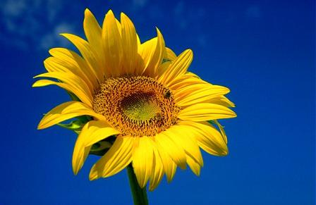
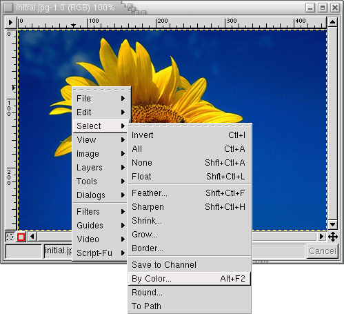
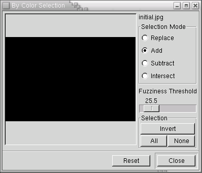
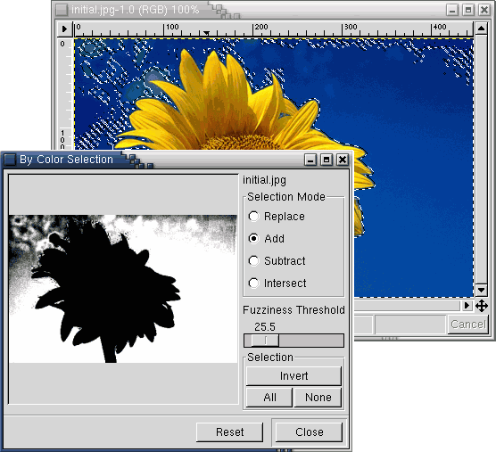
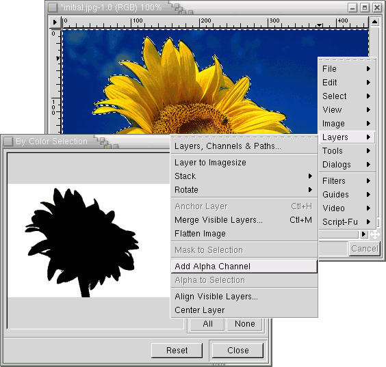
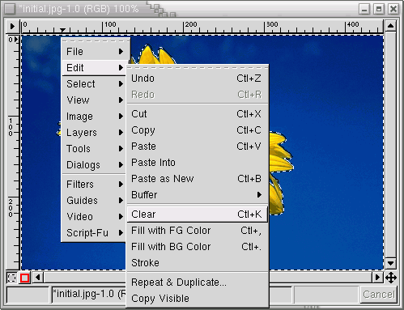
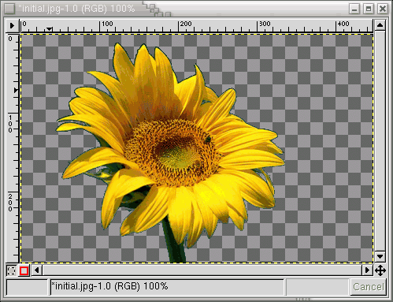
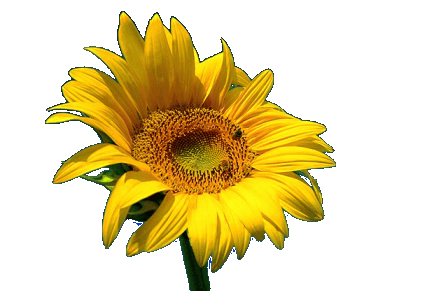

Many times you have an image with a colored background, like the one below and you want to take out the background to use the image's subject in a composition. With gimp there are many ways to achieve this, one of which is using a plug-in specifically designed for this: Changing Background Color 1.

In this tutorial I explore the select by color option to remove a particular color from the image. The first step, after you have loaded the image of course, is to click on the image with the right mouse button, and choose the option <Image>Select->By Color as seen above:

After choosing that option a dialog window will appear. This window shows several options. The black square on the left side shows the current selection. Anything that appears white is selected, anything that is black is not. When you strart using the dialog you will see what this means. On the right side there are two options we will consider for the moment. The first one is the Selection Mode. We will use the add option, which means any color we click on will be added to the selection. The other setting is the Fuzziness Threshold. When you click on a color, the higher this setting is, the more similar colors to the one you clicked on will be selected. You can start by using the default setting and increasing it if you need to add more colors faster, or decrease it if you're selecting more then you want. Select by color dialog

Now it's time to start selecting the color you want to remove. Just start clicking on the color you don't want and watch the selection update. If that didn't select all the color you want, continue clicking on the unselected parts until you get the desired result.

Finally, there is one last step before you can remove the background. You have to add an alpha channel (a common term for transparency in images) to your image. To do that you have to use the right button on the mouse to get the image menu and go to layers and add alpha channel.

With the selection complete and with an alpha channel just choose from the image menu <Image>Edit->Clear, and the image background will be gone.

After the last step you should get something like this in Gimp.
You can now use this image in a composition or in a web page with a different background like below:

Of course you still have to take care of the details if you want to merge an image perfectly into another.
The sunflower image was taken by the photographer Raymond Lofthouuse.
The original tutorial can be found here.